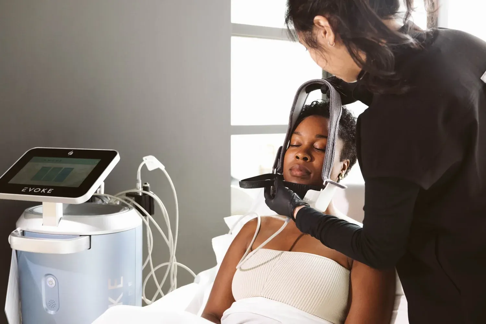
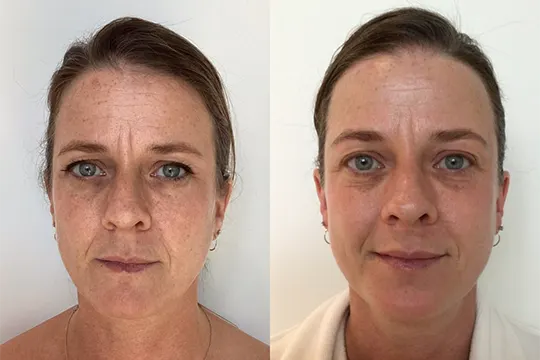
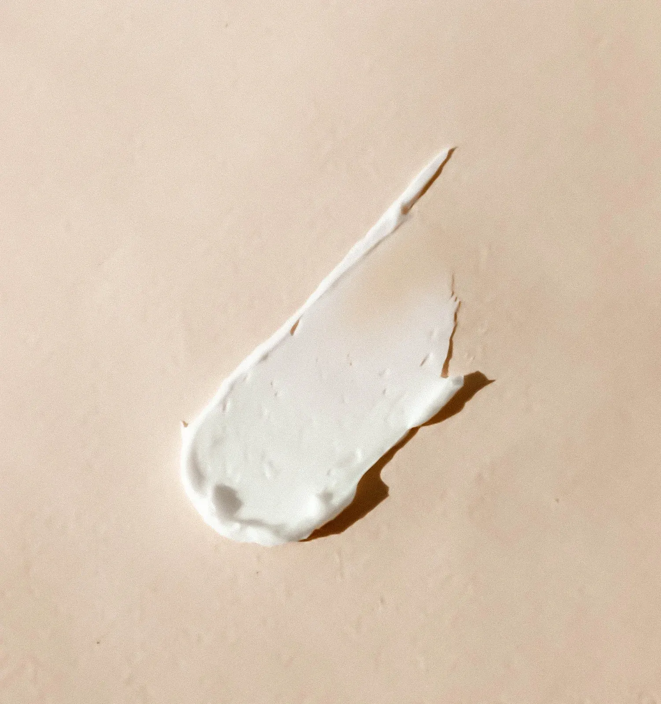

Discover the power of non-surgical facial rejuvenation with our expert team. We offer comprehensive solutions, plans, and programs tailored to your needs, delivering transformative results for all signs of aging, discoloration, and acne / acne scaring.
Skin Concern Legend


Microneedling | Radiofrequency microneedling | Non-Invasive Lower FaceLift | Intense Pulse LIght (IPL)

Microneedling
Collagen Induction Therapy
PLEASE NOTE THAT A CONSULTATION IS REQUIRED FOR THIS TREATMENT PRIOR TO SERVICE.
Our collagen induction therapy, commonly referred to as microneedling, is a cosmetic procedure that involves stamping the skin with tiny, sterile needles. This process encourages your skin to produce more elastin and collagen, restoring a healthy glow to the skin. Appropriate for anyone in search of improved skin texture, microneedling can be used to treat multiple concerns, such as acne scars, stretch marks and hyperpigmentation. Down-time for this service ranges from 24 hours to 3 days.
This treatment involves three steps:
- Skin cleansing and numbing
- Microneedle stamping
- Collagen Mask & Ice Globe Facial Massage.
Pairs well with: LED Light Therapy, Hydrating Facial, AlumierMD Medical Grade Chemical Peel, Forma (Radiofrequency) Treatment
Treatment Time
1.5 Hours
Downtime
1 to 3 days
What areas can be treated
Face
Neck
Decolette
TREATS/ BENEFITS
Sagging skin, Textured skin, Acne scarring, stretch marks, deep lines, jowls, Undefined Jawline, Double Chin (Subcutaneous Fat), crow's feet, nasolabial folds & cellulite.
Results
4 Weeks after and continue to improve over the next 3 months
Average number of treatments
ANTI-AGING | 3
ACNE SCARRING | 4
Discomfort Level
2/5
Topical is applied for 30 to 40 min
Radiofrequency Microneedling
Skin Tightening, Facial Rejuvenation & Collagen Synthesis
PLEASE NOTE THAT A CONSULTATION IS REQUIRED FOR THIS TREATMENT PRIOR TO SERVICE.
Our clinic specializes in advanced radiofrequency (RF) microneedling treatments. Our providers have been trained in advanced techniques and are able to deliver outstanding results for:
- Facial Rejuvenation for Anti-Aging - RF microneedling offers a powerful, non-surgical solution for anti-aging, achieving truly transformative results. This innovative treatment works by combining microneedling with radiofrequency energy to target multiple layers of the skin, stimulating profound renewal from the inside out.
The microneedles create tiny injuries that trigger the body's natural healing response, while simultaneously delivering radiofrequency energy deep into the dermis. This synergistic action boosts collagen and elastin production, resulting in firmer, tighter skin with improved texture and tone.
Experience a visible lift in the lower face, reduced jowls and sagging, and a dramatic reduction in fine lines and wrinkles. RF microneedling also helps to eliminate bacteria trapped in deeper layers, promoting clearer, healthier skin and a radiant complexion. Enjoy continued improvement for up to three months post-treatment as your skin continues to regenerate.
- Facial Remodeling - RF microneedling can also be used to reshape & contour your face. If you're looking to enhance your facial contours, define your jawline, lift sagging cheeks, or reduce jowls or a double chin, this is an excellent non-surgical option. We have achieved some exceptional results for this category over the years.
To further enhance or maintain your results, you can always consider combining RF microneedling with additional radiofrequency treatments like our RF wand that is designed to target specific areas on the face like your eyes, cheeks and jawline or our hands free lower face head pieces that deliver consistent, controlled energy in order to lift and tighten.
- Acne & Acne Scarring - Active cystic acne and acne scarring can both be effectively treated with specific protocols. One of the key benefits of this technology is that you don't have to wait for your acne to clear up before starting treatment. You can undergo the procedure even during a breakout.
Radiofrequency microneedling treats acne by killing bacteria, stimulating collagen production, and reducing inflammation. After the procedure, your skin may go through a purging phase for up to a week, where excess oil and bacteria are expelled to the surface. Following this, your skin should begin to clear up.
RF microneedling breaks up the scar tissue left by years of acne while simultaneously stimulating collagen and elastin production to aid with healing and effectively filling in the sunken depressions. Depending on severity, more than 3 treatments may be required.
- Facial Resurfacing - A radiofrequency microneedling treatment focused on treating the surface of the skin. Perfect for our younger clients or those who are more concerned with achieving the ‘glass skin’ look as opposed to skin tightening and remodeling. This procedure will help with fine lines and wrinkles, scarring, uneven skin tone, pore size, laxity and will help you achieve that luminous, smooth and even look. Please note, this procedure is not suitable for people who are classified as a Fitzpatrick IV, V or VI.
Treatment Time
1.5 to 2 Hours
Downtime
1 to 3 days
What areas can be treated
Face Eyes
Neck
Upper Arms
Abdomen
Upper Thighs
Knees
TREATS/ BENEFITS
Sagging skin, Textured skin, Acne scarring, stretch marks, deep lines, jowls, Undefined Jawline, Double Chin (Subcutaenous Fat), crow's feet, nasolabial folds, cellulite
Results
3 weeks after and continue to improve over the next 3 months
Average number of treatments
ANTI-AGING | 1 TO 3
ACNE SCARRING | 3 TO 4 Remodeling | 3 Resurfacing | 1 to 3
Discomfort Level
4/5
Topical is applied for a minimum of 60 min
Non-Invasive Lower Face Lift
Radiofrequency Chin & Cheek Applicators
PLEASE NOTE THAT A CONSULTATION IS REQUIRED FOR THIS TREATMENT PRIOR TO SERVICE.
Our lower face radiofrequency device is hands free and able to deliver optimal effectiveness for lifting the cheeks, defining the jawline and eliminating stubborn submental fat (double chin). It is also completely pain free and non-invasive.
The cheek applicators are placed under the cheek bones and down to the jawline emitting heat & energy that will lift & tighten the lower face by stimulating collagen production. The duration and settings are based on your desired results and your skin’s response but typically your provider will leave it on for 30 to 45 minutes. Subsequently, the chin applicator is placed right over the submental (loose or fatty deposit under your chin), targeting that most stubborn part of our face where even the slimmest people find it difficult to address. The temperature will be increased if warranted to cause apoptosis (a fancy way of saying fat cell destruction) that will work to kill the fatty deposits and tighten the remaining skin.
The reason this device is so successful is that it destroys fat while tightening the skin. If you received an injection meant to eliminate fat cells, it will do this but it will not work to tighten. Therefore, depending on severity you could be left with a collection of loose skin under the chin.
Pairs well with: Injectables, RF Microneedling, Anti-Aging Facial
What areas can be treated
Face
Neck
Downtime
0 Days
Treatment Time
30 TO 45 MINS FOR SKIN TIGHTENING
30 TO 45 FOR FAT BURNING/ COLLAGEN REMODELING
TREATS/ BENEFITS
Sagging skin, jowls, Undefined Jawline, Double Chin (Subcutaneous Fat), nasolabial folds.
Results
3 weeks after and continue to improve over the next 3 months
Average number of treatments
SKIN TIGHTENING | 4 TO 6
SUBCUTANEOUS (DOUBLE CHIN) | 6 TO 8
Discomfort Level
1/5
Very little discomfort
Radiofrequency
Skin Tightening Treatments
PLEASE NOTE THAT A CONSULTATION IS REQUIRED FOR THIS TREATMENT PRIOR TO SERVICE.
Using radiofrequency (RF) to deliver warmth to the skin, RF stimulates the production of new collagen and elastin, improving the overall laxity of the area being treated. Extremely versatile in its application, this skin tightening treatment can be applied to address a specific area of concern like the jawline, neck or eyes.
The number, frequency, and duration of treatments will depend on your personal assessment and skin goals. Your Clinical Esthetician will work alongside you to create a customized treatment plan that fits your needs and helps you achieve your desired results within a specified timeframe.
Pairs well with: Anti-Aging Facial, RF Microneedling, Microneedling
Treatment Time
30 min to 1 Hour
Downtime
0 days
What areas can be treated
Face
Neck
TREATS/ BENEFITS
Sagging skin, Wrinkles & fine lines, Undefined Jawline, crow's feet, nasolabial folds
Results
Instant lift and brightening.Results continue to improve up to 3 months after the last session
Average number of treatments
Monthly - Maintenance & Prevention
4 to 6 weekly treatments for skin tightening
Discomfort Level
1/5
Very little discomfort
Intense Pulse Light (IPL)
Using Light Wavelengths to Treat Pigment & Redness
PLEASE NOTE THAT A CONSULTATION IS REQUIRED FOR THIS TREATMENT PRIOR TO SERVICE.
IPL treatments are a staple of many medical spas and skincare clinics, effectively addressing a range of skin concerns including hyperpigmentation, age spots, vascular lesions, rosacea, and redness. By emitting light at various wavelengths, IPL breaks down unwanted discoloration, promoting a brighter, more even, and healthy complexion.
The popular IPL Photofacial targets both brown (pigment) and red (vascular) discolorations on the face and below the surface of the skin, serving as an excellent preventive measure, maintenance tool, or corrective treatment.
IPL can be applied to any sun-exposed area. Hands and chest (décollete), often neglected in the application of sun protection, are commonly treated areas, as they're prone to sun damage and age spots. The back and arms are also treatable options, particularly beneficial for those with a history of sun worshipping.
Important Note: A consultation and / or patch test are required before booking. As a photosensitive treatment, it requires that you have no active tan, have avoided sun exposure for at least three weeks prior and plan to avoid the sun for at least three weeks after, and are classified as Fitzpatrick skin type I, II, or III.
Pairs well with: Soothing Facial, Hyperpigmentation Facial, Microneedling, Medical Grade Chemical Peels
Treatment Time
30 mins to 1 Hour
Downtime
0.5 days
What areas can be treated
Face
Neck
Decollete
Shoulders
Arms
Hands
Back
Feet
TREATS/ BENEFITS
Sun spots, Age Spots, Hyperpigmentation, Uneven Skin, Tone, Freckles, Redness, Rosacea
Results
1 to 2 Weeks after
Average number of treatments
1 to 5
Discomfort Level
2/5
